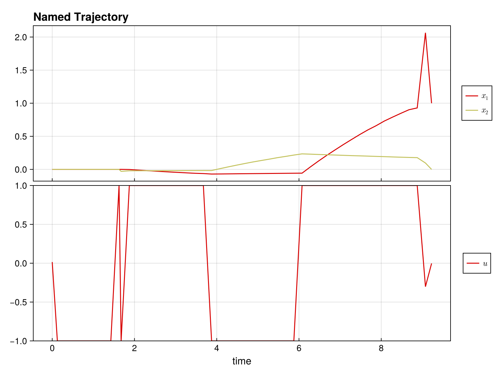

Quickstart Guide
Welcome to DirectTrajOpt.jl! This guide will get you up and running in minutes.
What is DirectTrajOpt?
DirectTrajOpt.jl solves trajectory optimization problems - finding optimal control sequences that drive a dynamical system from an initial state to a goal state while minimizing a cost function.
Installation
First, install the package:
using Pkg
Pkg.add("DirectTrajOpt")You'll also need NamedTrajectories.jl for defining trajectories:
using DirectTrajOpt
using NamedTrajectories
using LinearAlgebra
using CairoMakieA Minimal Example
Let's solve a simple problem: drive a 2D system from [0, 0] to [1, 0] with minimal control effort.
Step 1: Define the Trajectory
A trajectory contains your states, controls, and time information:
N = 50 # number of time steps
traj = NamedTrajectory(
(
x = randn(2, N), # 2D state
u = randn(1, N), # 1D control
Δt = fill(0.1, N), # time step
);
timestep = :Δt,
controls = :u,
initial = (x = [0.0, 0.0],),
final = (x = [1.0, 0.0],),
bounds = (Δt = (0.05, 0.2), u = 1.0),
)N = 50, (x = 1:2, u = 3:3, → Δt = 4:4)Step 2: Define the Dynamics
Specify how your system evolves. For bilinear dynamics ẋ = (G₀ + u₁G₁) x:
G_drift = [-0.1 1.0; -1.0 -0.1] # drift term
G_drives = [[0.0 1.0; 1.0 0.0]] # control term
G = u -> G_drift + sum(u .* G_drives)
integrator = BilinearIntegrator(G, :x, :u, traj)BilinearIntegrator: :x = exp(Δt G(:u)) :x (dim = 2)Step 3: Define the Objective
What do we want to minimize? Let's penalize control effort:
obj = QuadraticRegularizer(:u, traj, 1.0)QuadraticRegularizer on :u (R = [1.0], all)Step 4: Create and Solve
Combine everything into a problem and solve:
prob = DirectTrajOptProblem(traj, obj, integrator)DirectTrajOptProblem
Trajectory
Timesteps: 50
Duration: 4.9
Knot dim: 4
Variables: x (2), u (1), Δt (1)
Controls: u, Δt
Objective: QuadraticRegularizer on :u (R = [1.0], all)
Dynamics (1 integrators)
BilinearIntegrator: :x = exp(Δt G(:u)) :x (dim = 2)
Constraints (4 total: 2 equality, 2 bounds)
EqualityConstraint: "initial value of x"
EqualityConstraint: "final value of x"
BoundsConstraint: "bounds on Δt"
BoundsConstraint: "bounds on u"The problem summary shows the trajectory, objective, dynamics, and constraints:
probDirectTrajOptProblem
Trajectory
Timesteps: 50
Duration: 4.9
Knot dim: 4
Variables: x (2), u (1), Δt (1)
Controls: u, Δt
Objective: QuadraticRegularizer on :u (R = [1.0], all)
Dynamics (1 integrators)
BilinearIntegrator: :x = exp(Δt G(:u)) :x (dim = 2)
Constraints (4 total: 2 equality, 2 bounds)
EqualityConstraint: "initial value of x"
EqualityConstraint: "final value of x"
BoundsConstraint: "bounds on Δt"
BoundsConstraint: "bounds on u"solve!(prob; max_iter = 100, verbose = false)This is Ipopt version 3.14.19, running with linear solver MUMPS 5.8.2.
Number of nonzeros in equality constraint Jacobian...: 776
Number of nonzeros in inequality constraint Jacobian.: 0
Number of nonzeros in Lagrangian Hessian.............: 1254
Total number of variables............................: 196
variables with only lower bounds: 0
variables with lower and upper bounds: 100
variables with only upper bounds: 0
Total number of equality constraints.................: 98
Total number of inequality constraints...............: 0
inequality constraints with only lower bounds: 0
inequality constraints with lower and upper bounds: 0
inequality constraints with only upper bounds: 0
iter objective inf_pr inf_du lg(mu) ||d|| lg(rg) alpha_du alpha_pr ls
0 1.2021136e-01 4.57e+00 2.20e+212 0.0 0.00e+00 - 0.00e+00 0.00e+00 0
1 1.2075247e-01 4.57e+00 1.39e+191 -2.1 7.04e+210 - 1.02e-212 2.04e-212h 1
2 1.5910295e-01 4.57e+00 3.17e+167 -2.1 6.56e+190 - 8.41e-192 9.36e-192h 1
3 1.6838347e-01 4.57e+00 1.05e+144 -2.2 1.33e+167 - 2.50e-168 2.94e-168h 1
4 1.5680271e-01 4.57e+00 4.54e+00 -2.2 1.53e+144 - 3.38e-145 2.24e-145h 1
5 1.7969609e-01 1.24e+00 2.60e+00 -1.1 2.89e+00 - 8.21e-02 7.34e-01f 1
6 1.8583047e-01 7.07e-01 1.81e+00 -2.0 8.54e-01 - 1.86e-01 4.27e-01h 1
7 1.8578794e-01 6.89e-01 4.90e+00 -0.9 1.23e+00 - 5.75e-01 2.56e-02h 1
8 1.4269830e-01 4.61e-01 5.68e+00 -0.6 5.06e+00 - 7.89e-01 3.48e-01f 1
9 1.9533462e-01 1.91e-01 5.00e+00 -0.6 2.36e+00 - 7.69e-01 5.89e-01h 1
iter objective inf_pr inf_du lg(mu) ||d|| lg(rg) alpha_du alpha_pr ls
10 2.6472233e-01 1.26e-01 6.10e+00 -0.6 1.92e+00 - 7.07e-01 3.36e-01h 1
11 3.0460887e-01 1.08e-01 1.59e+01 -0.3 3.92e+00 - 7.23e-01 1.42e-01h 1
12 4.6931953e-01 5.27e-02 2.33e+01 -0.5 1.45e+00 - 9.82e-01 5.11e-01h 1
13 5.2334833e-01 4.87e-02 1.52e+02 0.5 1.31e+01 - 7.14e-01 7.60e-02h 1
14 6.8892609e-01 2.93e-02 5.36e+02 0.3 7.14e-01 - 9.36e-01 3.95e-01h 1
15 7.4431577e-01 2.70e-02 1.99e+03 0.8 5.28e+00 - 9.98e-01 8.12e-02h 1
16 7.7943220e-01 2.51e-02 1.09e+04 1.1 2.43e+01 - 9.87e-01 6.71e-02h 1
17 8.5657022e-01 2.18e-02 6.21e+04 1.3 1.41e+00 - 1.00e+00 1.32e-01h 1
18 8.7917266e-01 2.09e-02 1.35e+06 2.3 8.66e-01 - 1.00e+00 4.36e-02h 1
19 8.8483012e-01 2.06e-02 1.20e+08 2.6 3.10e+00 - 1.00e+00 1.15e-02h 1
iter objective inf_pr inf_du lg(mu) ||d|| lg(rg) alpha_du alpha_pr ls
20 8.8501002e-01 2.06e-02 1.14e+11 2.7 1.47e+01 - 3.56e-01 3.71e-04h 1
21 8.8486930e-01 1.54e-02 3.43e+11 1.7 5.77e-02 - 1.00e+00 2.55e-01h 1
22 8.8486887e-01 1.53e-02 5.57e+14 2.7 8.15e-02 - 1.00e+00 5.96e-04h 1
23 8.8496007e-01 1.68e-02 2.31e+13 2.1 6.43e-01 - 1.00e+00 3.12e-02h 6
24 8.8496782e-01 1.65e-02 2.06e+09 0.6 2.06e-03 12.0 1.00e+00 1.00e+00H 1
25 8.8497176e-01 1.63e-02 2.21e+09 0.2 8.32e-04 12.4 1.00e+00 9.36e-01h 1
26 8.8497148e-01 1.63e-02 1.56e+15 1.9 1.23e-01 - 1.00e+00 7.22e-04h 1
27 8.8404463e-01 3.00e-02 1.05e+144 2.7 1.26e-01 - 9.90e-01 1.00e+00f 1
28 8.8404541e-01 3.01e-02 5.71e+124 0.6 5.71e+132 11.9 5.97e-134 2.84e-137h 12
29 8.8404541e-01 3.01e-02 1.69e+13 0.6 1.87e+103 - 1.29e-112 3.37e-113h 4
iter objective inf_pr inf_du lg(mu) ||d|| lg(rg) alpha_du alpha_pr ls
30 8.8375807e-01 8.16e-01 1.95e+12 2.4 8.20e-01 12.4 8.87e-01 1.00e+00f 1
31 8.8378151e-01 1.09e+00 1.96e+12 1.7 3.10e-01 12.8 5.90e-02 8.99e-01f 1
32 8.8378675e-01 1.11e+00 1.96e+12 1.0 1.17e-01 13.2 6.07e-04 1.25e-01f 4
Number of Iterations....: 33
Number of objective function evaluations = 61
Number of objective gradient evaluations = 34
Number of equality constraint evaluations = 61
Number of inequality constraint evaluations = 0
Number of equality constraint Jacobian evaluations = 33
Number of inequality constraint Jacobian evaluations = 0
Number of Lagrangian Hessian evaluations = 33
Total seconds in IPOPT = 6.544
EXIT: Invalid number in NLP function or derivative detected.Step 5: Access the Solution
Let's look at the results.
plot(prob.trajectory)
The optimized trajectory is stored in prob.trajectory:
println("Final state: ", prob.trajectory.x[:, end])
println("Control norm: ", norm(prob.trajectory.u))Final state: [1.0, 0.0]
Control norm: 6.862300930706236What You Can Do
- Multiple objectives: Combine regularization, minimum time, terminal costs
- Flexible dynamics: Linear, bilinear, time-dependent systems
- Add constraints: Bounds, path constraints, custom nonlinear constraints
- Smooth controls: Penalize derivatives for smooth, implementable controls
- Free time: Optimize trajectory duration
This page was generated using Literate.jl.